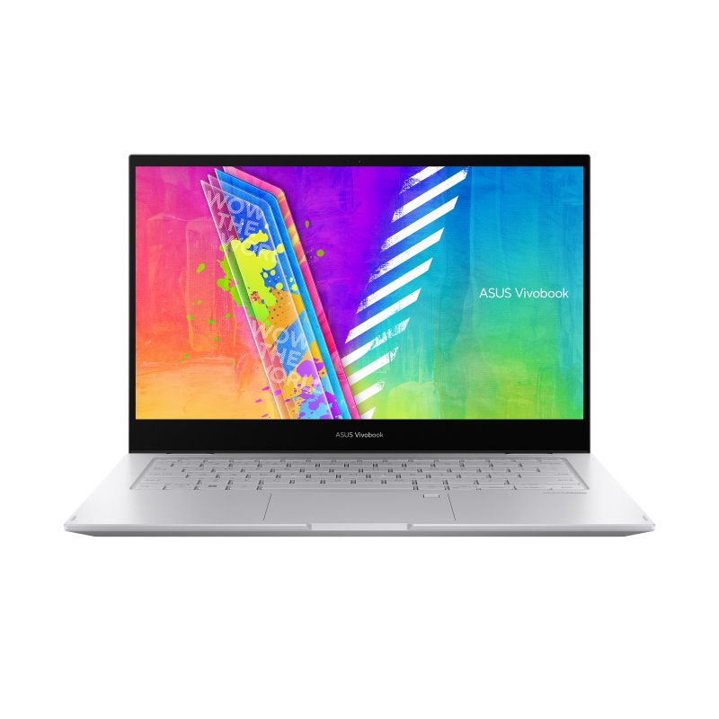

מתהפך 360°ASUS Vivobook Go 14 Flip
מחשב מתהפך · מסך מגע Full HD
מחשב נייד וטאבלט במכשיר אחד: המסך מסתובב 360° אחורה, כך שאפשר לעבוד עם מקלדת, לגלוש ולקרוא כמו בטאבלט, או לצפות בסרטים במצב אוהל. מסך מגע 14 אינץ' Full HD ומשקל של 1.45 ק"ג בלבד.
🔄
מתהפך לטאבלט
360°
ציר שמסתובב עד הסוף: נייד, טאבלט, אוהל או מעמד, לפי מה שנוח באותו רגע.
👆
מסך מגע
14 אינץ' FHD
מסך Full HD (1920×1080) עם זווית צפייה רחבה ותמיכה בעט: כתיבה, ציור וחתימה באצבע או בעט.
💻ניידעבודה והקלדה
📱טאבלטגלישה וקריאה
⛺אוהלסרטים ומתכונים
🖼מעמדמצגות וזום
- 🪶קל ודק1.45 ק"ג, עובי 1.59 ס"מ
- 🪟Windows 11 מקוריתמותקנת ומוכנה לעבודה
- 💾חריץ SSD פנויאפשר להוסיף כונן SSD מהיר בהמשך
- 📶Wi-Fi 5 ו-BluetoothUSB-C, USB-A ומצלמה HD
המחיר שלנו
מחיר לפי פנייה
✓ כולל התקנות מלאות
🚚 משלוח חינם
🛠 אחריות יבואן רשמי
למי זה מתאים?
🎓
תלמידים
שיעורי בית, זום ומצגות, וגם כתיבה ביד על המסך במצב טאבלט.
👵
גלישה וקריאה
מסך מגע נוח למי שמעדיף לגעת במקום להשתמש בעכבר.
🎬
צפייה בסרטים
במצב אוהל המחשב עומד לבד על השולחן או על המיטה, בלי מקלדת שמפריעה.
מחשב בסיסי לגלישה, Office, זום ולימודים. לא מיועד לתוכנות כבדות, עריכה או משחקים. הזיכרון (4GB) מולחם ללוח ואינו ניתן להרחבה.
מפרט
| מעבד | Intel Celeron N4500: 2 ליבות, עד 2.8GHz, גרפיקה Intel UHD |
|---|---|
| זיכרון | 4GB DDR4 (מולחם, לא ניתן להרחבה) |
| אחסון | 128GB eMMC חריץ M.2 פנוי להוספת כונן SSD |
| מסך | 14 אינץ' Full HD (1920×1080), מגע, זווית צפייה רחבה, מבריק, תמיכה בעט |
|---|---|
| מבנה | ציר 360° · ארבעה מצבי שימוש |
| חיבורים | USB-C 3.2 · USB-A 3.2 · USB 2.0 · שקע אודיו 3.5 מ"מ |
| תקשורת | Wi-Fi 5 (802.11ac) + Bluetooth |
| מצלמה ושמע | מצלמה 720p · רמקולים ומיקרופון מובנים |
| סוללה | 39Wh |
| משקל ומידות | 1.45 ק"ג · 32.1 × 21.7 × 1.59 ס"מ |
| צבע | Cool Silver (כסוף) |
| מערכת הפעלה | Windows 11 Home מקורית, מקלדת בעברית |
| דגם | ASUS Vivobook Go 14 Flip TP1401KA-EC170WS |
המפרט לפי ASUS ותווית היצרן ועשוי להשתנות. התמונות להמחשה בלבד. העט אינו כלול.